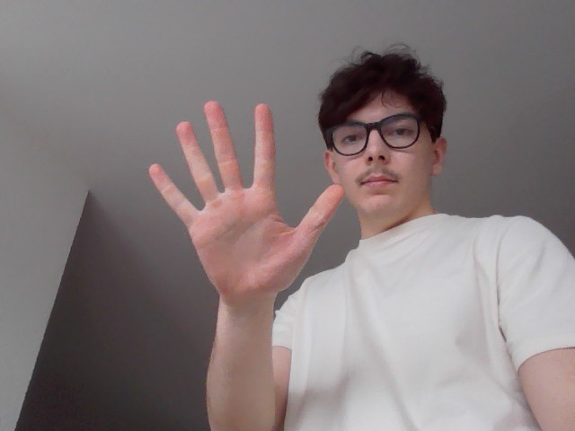
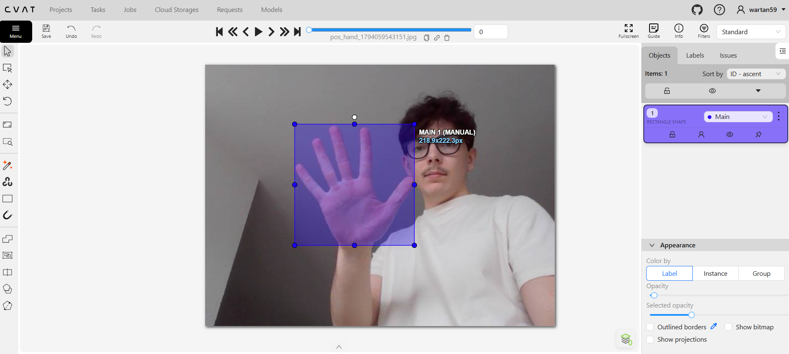
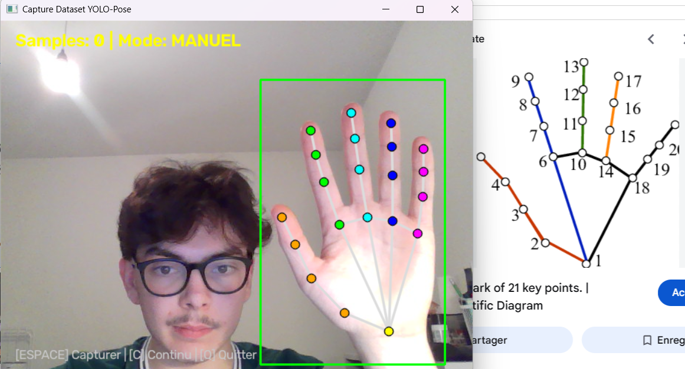
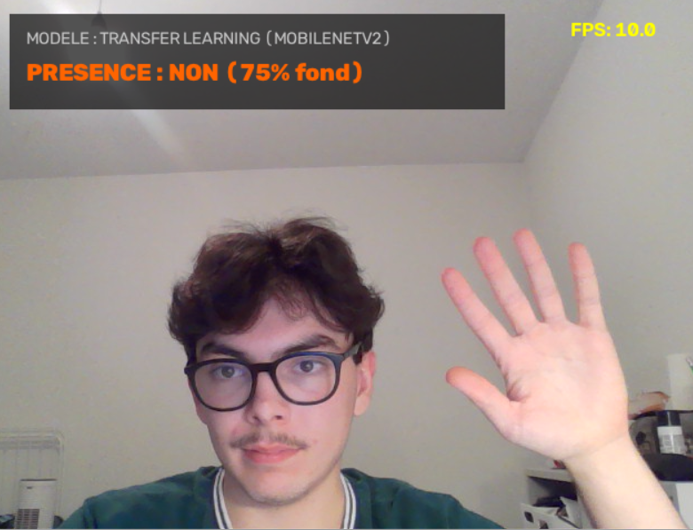
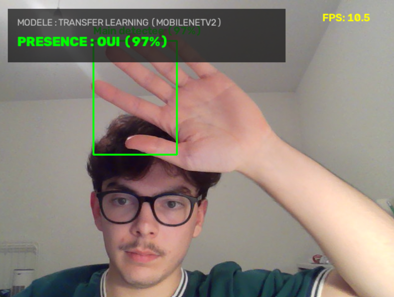
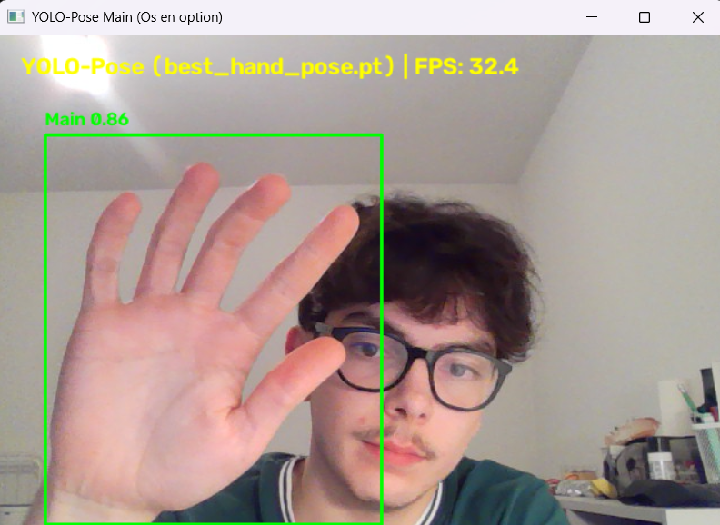

1.1 Collecte des Données
Constitution d'un jeu de données équilibré comprenant des images avec main et sans main, sous des conditions variées de luminosité, d'angles de vue et d'environnements (bureaux, fonds unis, arrière-plans complexes).
L'objectif de ce projet est de concevoir un système de vision par ordinateur robuste capable de détecter en temps réel si une main est présente devant la caméra et d'en estimer la position spatiale précise via une boîte englobante (*bounding box*).
Au-delà de la simple inférence, ce projet met en valeur la chaîne complète d'un projet de Deep Learning appliqué : de la collecte d'images variées à la labellisation semi-automatique avec Google MediaPipe, jusqu'au benchmark comparatif entre un réseau de neurones personnalisé (*from scratch* vs *transfer learning*) et un modèle état de l'art YOLO.
Constitution d'un jeu de données équilibré comprenant des images avec main et sans main, sous des conditions variées de luminosité, d'angles de vue et d'environnements (bureaux, fonds unis, arrière-plans complexes).

Première phase d'annotation manuelle sur l'outil CVAT pour poser les bases du format. Chaque image est associée à une étiquette précisant :
0 ou 1).
La labellisation manuelle devenant rapidement fastidieuse et chronophage, j'ai mis en place un pipeline d'auto-annotation en détournant la librairie Google MediaPipe Hands. MediaPipe a été utilisé comme générateur automatique de labels : extraction des points clés, calcul de la boîte englobante minimale et export direct au format d'entraînement sans intervention manuelle répétitive.

Entraînement d'un premier réseau convolutionnel (CNN) entièrement from scratch (poids initialisés aléatoirement) sur ce dataset pour évaluer la capacité d'apprentissage brute.

Après avoir entraîné le modèle à partir de zéro, j'ai repris la même architecture de réseau en appliquant une démarche de Transfer Learning (utilisation d'un backbone aux poids pré-entraînés sur une large base de vision).
Les couches convolutives profondes ont été figées pour conserver les détecteurs de textures et de contours généraux, tandis que la tête de classification et de régression (X, Y, W, H) a été fine-tunée sur notre dataset de mains.
Résultat : Une vitesse de convergence démultipliée (moins d'époques d'entraînement nécessaires) et une bien meilleure capacité de généralisation face aux variations de couleur de peau et de luminosité.

Pour franchir un cap en termes de cadence d'inférence (FPS) et de précision de localisation, j'ai entraîné un modèle dédié de la famille YOLO (You Only Look Once).
Grâce à son architecture One-Stage, YOLO traite l'image en une seule passe réseau, prédisant directement les probabilités de classe et les coordonnées de boîte englobante.
Performance : Une inférence ultra-rapide (>30 FPS avec CPU), assurant un suivi fluide en temps réel.

| Approche / Modèle | Précision de Détection | Convergence / Entraînement |
|---|---|---|
| 1. CNN Custom (From Scratch) | Moyenne (sensible aux ombres et arrière-plans complexes) | Lente (nombreuses époques requises pour converger) |
| 2. CNN Custom (Transfer Learning) | Bonne (forte réduction des faux positifs) | Très rapide |
| 3. Modèle YOLO Dédié | Excellente (localisation millimétrique de la boîte englobante) | Optimisée |
La détection et le suivi de main ouvrent la voie à des applications interactives et technologiques majeures :
Reconnaissance des lettres et des gestes en temps réel pour faciliter la traduction et l'accessibilité.
Classification instantanée de gestes symboliques en direct pour des jeux interactifs et des démonstrateurs d'intelligence artificielle ludiques.
Remplacement de la souris par le mouvement de la main dans l'espace : navigation, clic par pincement de doigts et défilement sans contact physique.
Suivi des mouvements et articulations des doigts par caméra pour téléopérer directement le bras robotisé SO-ARM101 par la vision.